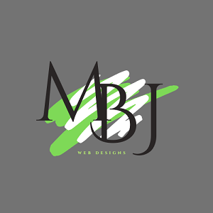

Overview
Purpose
The purpose of this personal website is to create an online portfolio to showcase my skills, projects and experience in web design and development. The site will serve as visual representation of my best designs (work) and provide a comprehensive overview of my achievements and qualifications to future employers and recruiters.
Audience
This personal portfolio website is mainly intended for future employers, hiring managers, and recruiters, who are looking for web designers or developers to hire. The website aims to make a strong impression by showcasing my skills and experience, demonstrating my capabilities and suitability for their organization.
Branding
Website Logo
Style Guide
Color Palette
Palette URL: https://coolors.co/palette/036d19-0fff95-ccc9e7-6c6f7d-2e3138| Primary | Secondary | Accent 1 | Accent 2 |
|---|---|---|---|
| #6C6F7D | #CCC9E7 | #0FFF95 | #2E3138 |
Typography
Heading Font: Orbitron
Paragraph Font: Raleway
Normal paragraph example
My personal portfolio website is my digital canvas, where I proudly showcase my journey as a passionate beginner in the world of web design and development. I've put my heart and soul into creating this platform to share my progress and the evolving skills that I'm developing with the world.
Colored paragraph example
The website offers a dynamic and engaging experience, allowing you to witness my progress firsthand. It's an authentic representation of my passionate journey, with a clear commitment to learning, growing, and contributing to the exciting and ever-evolving world of web design and development. I invite you to join me on this journey, offer your guidance, and share in my enthusiasm for the digital future.
Navigation
Site Map
Content
Home page
Hello and welcome to my personal portfolio! I'm thrilled to share my journey as a beginner in the world of web design and development. This website serves as a reflection of my passion for this field, and it's designed to showcase the progress I've made so far. As a student, I am dedicated to learning and growing in web design and development. This portfolio is a testament to my enthusiasm and commitment. I believe in the potential of the digital realm to transform our world, and I'm excited to be part of it. Take a moment to explore my evolving skills and early projects. While I'm still in the learning phase, I hope you'll see the potential and drive that I bring to the table. Your feedback and support mean a lot to me, and I'm looking forward to the exciting journey ahead.
Images for the Home page
Portfolio
Hello! I'm Moses Butro, a passionate web design and development student with a dream to shape the digital world. My journey began with a fascination for the art and science of web design, and I'm driven by the possibilities it offers. I'm currently pursuing a degree in Software Development at Brigham Young University Idaho, where I've had the privilege of acquiring a strong foundation in the fundamentals of web development.
Welcome to my evolving portfolio. Here, you can see the projects that I've tackled as a beginner in web design and development. These are the stepping stones of my journey, where I've applied the skills I've learned and the creativity that drives me. While I'm still learning, each project represents my dedication to this craft and the growth I've achieved. From simple web designs to basic development projects, I'm excited to share the progress I've made. Feel free to click on each project to explore my early work. Your feedback and suggestions are invaluable to me as I continue to develop my skills.
Images for the Page 2

Contact Me
I'm eager to connect with you and learn from your experiences. If you have advice, opportunities, or insights to share with me, please don't hesitate to reach out. I'm open to collaboration, mentorship, and guidance as I work towards becoming a skilled web designer and developer. You can use the contact form provided on this page to send me a message. Whether you're a fellow student, a professional in the industry, or someone interested in my work, I'm here to listen and respond promptly. Let's connect and explore the possibilities of learning and growing together in the world of web design and development. You can use the contact form provided on this page to send me a message or connect with me on Social Media. Whether you have a project in mind, questions about my work, or just want to say hello, I'm here to listen and respond promptly. Let's start a conversation and explore how I can be a valuable asset to your team.
Images for the Page 3


Wireframes
Create three wireframes for your site. One for each page and list them here
Home
[Any additional details about home that the wireframe does not make clear]
[Page 2]
[Any additional details about page 2 that the wireframe does not make clear]
[Page 3]
[Any additional details about page 3 that the wireframe does not make clear]